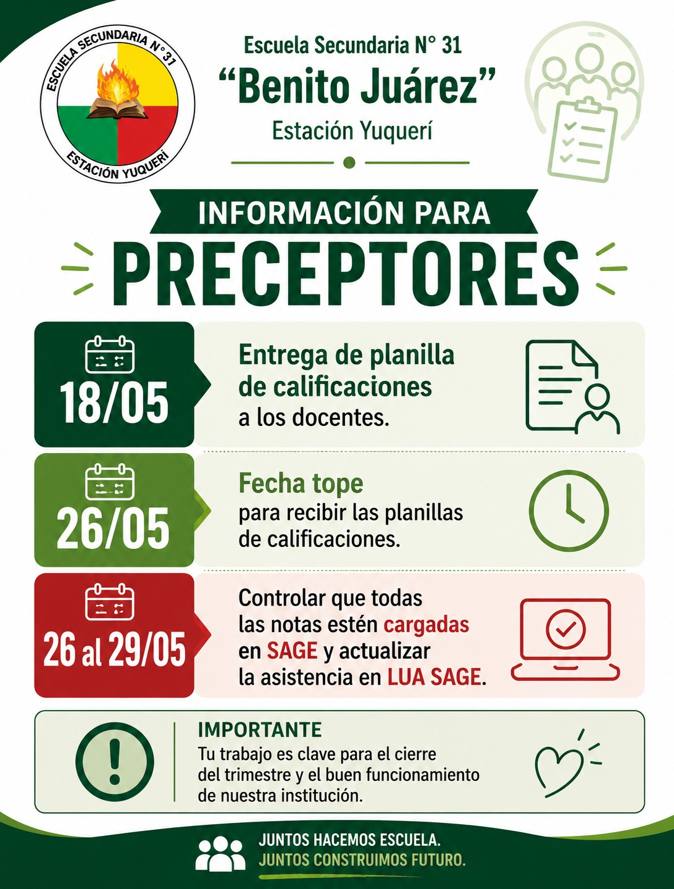
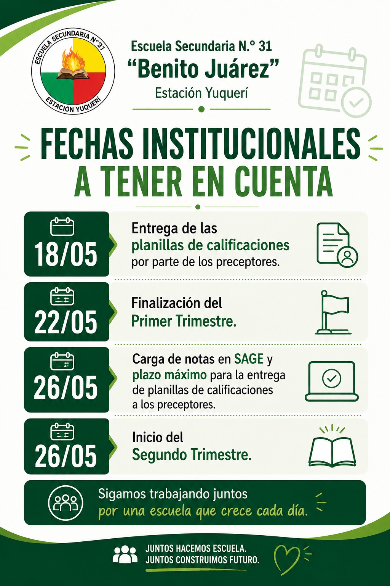
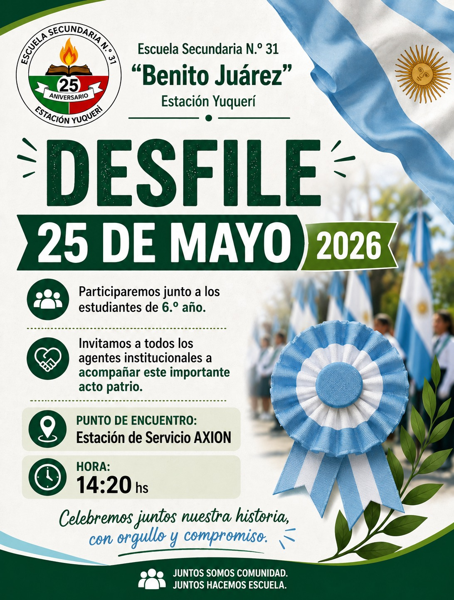
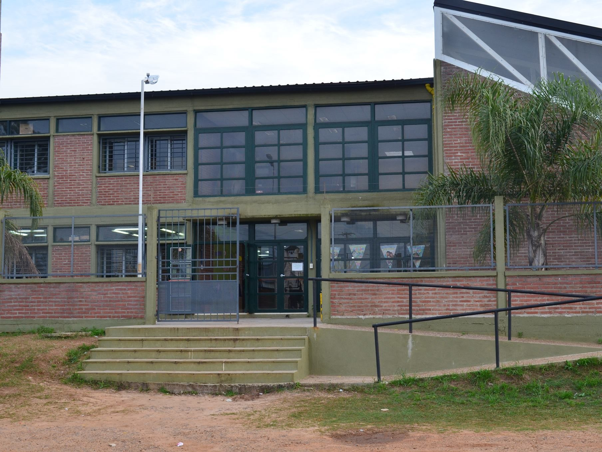

Fechas institucionales a tener en cuenta
Entrega de planillas de calificaciones por parte de los preceptores, finalización del primer trimestre, carga de notas en SAGE e inicio del segundo trimestre.
Este sitio reúne información, novedades, recursos y comunicaciones importantes para estudiantes, familias, docentes y toda la comunidad educativa.
La página se organiza como un portal institucional vivo, pensado para acompañar la vida escolar, fortalecer la comunicación y visibilizar los proyectos que construyen identidad en Estación Yuquerí.
Atajos principales para llegar rápidamente a la información institucional más utilizada.
Identidad, datos escolares y organización institucional.
Memoria escolar, 25 años y video histórico institucional.
Avisos, actividades, fechas escolares y comunicaciones importantes.
Documentos, formularios, normativa y enlaces útiles.
Alfabetización Digital, ABP y proyectos institucionales.
Proyecto institucional de salud, territorio, comunidad y acompañamiento integral.
Videos, fotografías, producciones sonoras y memoria escolar.
Canales oficiales de comunicación institucional.
Identidad, organización y datos centrales de la Escuela Secundaria N.º 31 “Benito Juárez”.
La Escuela Secundaria N.º 31 “Benito Juárez” construye su identidad desde la cercanía con las familias, la historia de la comunidad y el compromiso cotidiano con las trayectorias de sus estudiantes.
A lo largo de su recorrido, la institución se consolidó como un espacio de encuentro, pertenencia y acompañamiento, donde docentes, preceptores, equipos de orientación, estudiantes y actores institucionales participan en la construcción de una escuela abierta a la comunidad.
Esta identidad se fortalece en el trabajo colectivo, la presencia territorial y la convicción de que educar también implica escuchar, contener, orientar y construir oportunidades compartidas.
La Escuela Secundaria N.º 31 “Benito Juárez”, ubicada en Estación Yuquerí, Concordia, Entre Ríos, forma parte de la historia viva de su comunidad. Desde fines de la década de 1990 y comienzos de los años 2000, la institución nació como respuesta a la necesidad de garantizar oportunidades educativas para los jóvenes de la zona, sosteniendo el derecho a la educación secundaria en un contexto rural y territorialmente complejo.
A lo largo de su recorrido, la escuela creció junto a las familias, construyendo una identidad basada en la cercanía, el compromiso comunitario y el acompañamiento de las trayectorias estudiantiles. Su historia se encuentra profundamente vinculada al esfuerzo colectivo de docentes, estudiantes, directivos, preceptores, familias y actores institucionales que hicieron posible la consolidación de un espacio educativo abierto a la comunidad.
Hoy, luego de más de 25 años de trayectoria, la Escuela Secundaria N.º 31 continúa fortaleciendo proyectos institucionales, propuestas pedagógicas, acompañamiento territorial y procesos de innovación educativa, sosteniendo una educación pública centrada en la comunidad, la inclusión y la construcción de oportunidades compartidas.
La creación de la escuela representó un paso fundamental para garantizar el acceso a la educación secundaria en Estación Yuquerí y zonas cercanas. En sus comienzos, la institución funcionó en condiciones limitadas, atravesando desafíos vinculados al contexto rural, las distancias y la necesidad de consolidar recursos materiales y humanos.
Sin embargo, el acompañamiento de la comunidad permitió que la escuela creciera progresivamente, transformándose en un espacio de referencia para generaciones de estudiantes y familias.
La Escuela Secundaria N.º 31 se consolidó como un espacio de encuentro, pertenencia y construcción colectiva. Su identidad se construye diariamente a partir del vínculo cercano con las familias, el acompañamiento de las trayectorias escolares y la participación activa de la comunidad educativa.
La institución no solo cumple una función pedagógica, sino también social y comunitaria, fortaleciendo vínculos, promoviendo valores de convivencia y sosteniendo una escuela abierta al territorio.
En el año 2025, la institución celebró sus 25 años de trayectoria educativa, reafirmando su compromiso con la educación pública, la comunidad y las nuevas generaciones.
Este aniversario representó un momento de memoria colectiva, reconocimiento institucional y puesta en valor de las historias, experiencias y luchas compartidas que dieron forma a la identidad de la escuela.
En un contexto donde las distancias forman parte de la vida cotidiana, garantizar el acceso y permanencia escolar constituye una tarea fundamental.
La institución acompaña activamente las trayectorias educativas de sus estudiantes, articulando acciones con organismos y actores comunitarios para sostener la continuidad escolar y fortalecer el derecho a la educación.
La Escuela Secundaria N.º 31 cuenta con antecedentes de organización digital mediante espacios virtuales destinados a compartir materiales, actividades y comunicaciones con estudiantes y familias.
Estos procesos constituyen parte del recorrido institucional de integración tecnológica y fortalecimiento de la cultura digital escolar.
Producción audiovisual realizada en el marco de los 25 años de la Escuela Secundaria N.º 31 “Benito Juárez”, destinada a recuperar memorias, testimonios, imágenes y momentos significativos de la vida institucional.
Organización institucional, acompañamiento pedagógico y presencia cotidiana de los equipos de trabajo.
Rector: Mg. Julio Gallardo.
Secretaria: Prof. Romina Benitti.
Prof. Daiana Mohn
Lucas Gastón Acosta
Flavia Romani
Información para preceptores: entrega de planillas de calificaciones a docentes, recepción de planillas y control de carga de notas y asistencia en SAGE.
Mahler Julián
Avecedo, Maximiliano
Velázquez, Luciano Daniel
Orientación institucional para fortalecer prácticas pedagógicas, organización escolar y uso significativo de tecnologías.
Orientaciones para organizar el estudio, acceder a materiales digitales, resolver dificultades técnicas y sostener la continuidad educativa.
Apoyo en el uso de herramientas digitales, recursos institucionales, carga de información, producción de materiales y organización de propuestas pedagógicas.
Información clara sobre canales de comunicación, seguimiento escolar y formas de acompañar a los estudiantes desde el hogar.
Comunicados recientes, actos, recordatorios y actividades de la vida escolar.

Entrega de planillas de calificaciones por parte de los preceptores, finalización del primer trimestre, carga de notas en SAGE e inicio del segundo trimestre.

Entrega de planillas de calificaciones a docentes, fecha tope para recibir las planillas, control de carga de notas y actualización de asistencia en LUA SAGE.

Invitación a toda la comunidad educativa para acompañar a nuestros estudiantes en el acto patrio.
Documentos, formularios, normativa y enlaces de uso frecuente para la vida institucional.
Acceso al Plan/Proyecto Anual Institucional.
NormativaRégimen unificado de licencias e inasistencias.
FormularioDocumento editable de uso institucional.
Salidas educativasCarpeta institucional para salidas escolares.
AdministrativoDocumento editable institucional.
ModeloPlantilla editable para comunicaciones.
OrganizaciónAcceso al documento de horarios institucionales.
Este espacio queda preparado para incorporar guías de estudio, comunicados, tutoriales de acceso, orientaciones para familias y materiales de acompañamiento escolar.
Programa institucional para fortalecer capacidades digitales en los estudiantes desde un enfoque gradual, crítico, creativo y responsable.
Proyecto ABP orientado a reconstruir la memoria institucional de la Escuela Secundaria N.º 31 “Benito Juárez”, en el marco de su 25.º aniversario.
Seguimiento, orientación y acompañamiento para sostener la continuidad educativa de los estudiantes.
Espacio para proyectos, muestras, actos, producciones digitales y experiencias educativas significativas.
Proyecto institucional de memoria, identidad y construcción comunitaria desarrollado por estudiantes de la Escuela Secundaria N.º 31 “Benito Juárez”.
“Tesoros ocultos de la escuela” busca recuperar memorias, experiencias, relatos y huellas que forman parte de la identidad institucional y comunitaria de Estación Yuquerí.
A través de entrevistas, investigaciones, producciones digitales, fotografías históricas y actividades colectivas, estudiantes y docentes reconstruyen la historia viva de la escuela y de su comunidad.
El proyecto fortalece el sentido de pertenencia, la participación estudiantil, la memoria institucional y el vínculo entre generaciones.
Recuperación de relatos, fotografías y acontecimientos significativos de la vida institucional.
Los estudiantes se convierten en protagonistas y narradores de la historia de su escuela.
Fortalecimiento de vínculos con familias, ex estudiantes y vecinos de Estación Yuquerí.
Entrevistas, galerías, relatos, videos y materiales digitales desarrollados durante el proyecto.
Fotografías, videos, audios y producciones vinculadas con la identidad institucional.

Imagen institucional de referencia de la Escuela Secundaria N.º 31 “Benito Juárez”.
Producciones musicales vinculadas a la identidad, la memoria y el sentido de pertenencia de la escuela.
Canales oficiales de comunicación de la Escuela Secundaria N.º 31 “Benito Juárez”.